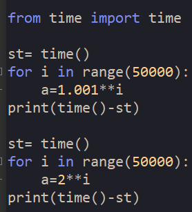

A retenir :
Le type d’une variable définit l’ensemble des valeurs qui peuvent lui être affectées ainsi que les opérations et fonctions utilisables.
Les types numériques de base sont int (ou integer) et float.
Le type int est utilisé pour représenter les nombres entiers. Leur taille n’est limitée que par la capacité de la machine et le temps nécessaire à leur utilisation. Un calcul avec des très grands entiers est possible en Python, mais peut prendre un temps important.
Le type float est utilisé pour représenter les nombres réels. Attention le point remplace la virgule utilisée en mathématiques en France. Les nombres du type float, forcément en nombre limité sont des décimaux qui servent à approximer des réels.
Si un nombre de type int dépasse la taille maximale utilisable par le processeur, il est découpé en deux parties ou plus et Python s’occupe des différentes opérations à effectuer. Cela prend alors plus de temps en mémoire et peut sérieusement ralentir un programme.
Vérifier avec le programme suivant que la première boucle s’exécute au moins 100 fois plus vite que la deuxième.
La différence s’explique par la gestion des entiers longs dans la deuxième boucle.
La plupart des processeurs calculent avec des nombres binaires de taille limitée à 32 ou 64 bits.
Opérations sur les types numériques
Les opérations mathématiques de base sont notées : a+b, a-b, a*b pour la multiplication, a/b pour la division et a**b pour la puissance.
Écrire un programme permettant de répondre à la question suivante : "Quel est le type du résultat d'une addition d'un int et d'un float ?"
Le résultat est de type float si a ou b est de type float et de type int uniquement si a et b sont de type int, sauf pour la division pour laquelle le résultat est toujours de type float.
La division entière // et l’opération modulo % utilisés avec des variables de type int donnent le quotient et le reste, de type int, de la division euclidienne.
Raccourcis d’écriture :

Quel est le résultat de l’addition des flottants 0,2 et 0,1.